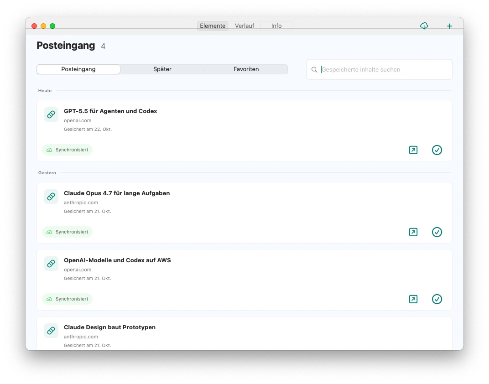
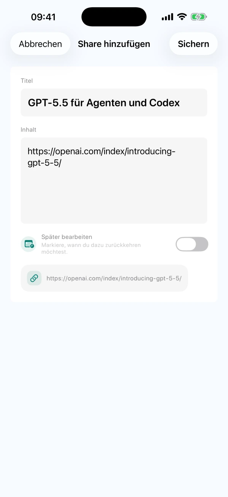
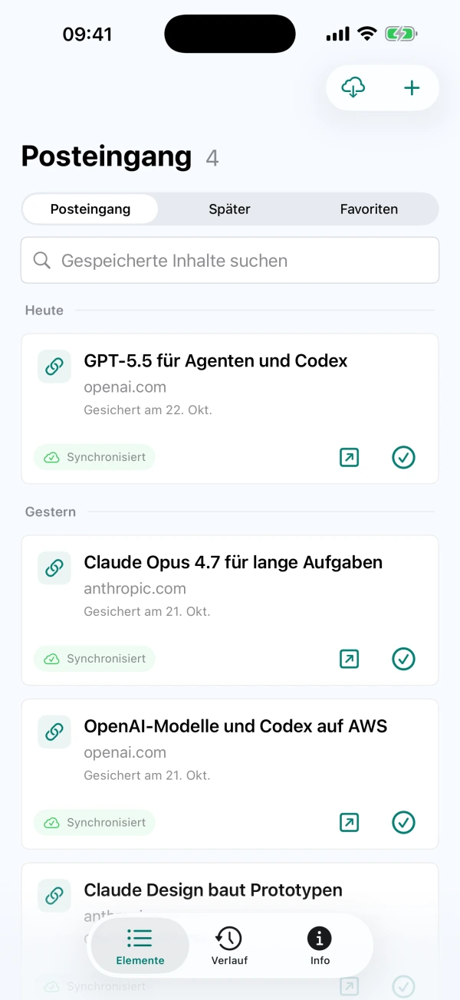

Teilen oder selbst notieren
Sichere unterstützte Texte, Links oder Bilder über das Teilen-Menü anderer Apps. Ideen kannst du auch direkt in CarryOver eingeben.
Auf dem Handy per Teilen-Menü speichern. Später am Mac die Quelle öffnen und weiterarbeiten.
Die aktuellen Funktionen erhältst du mit CarryOver aus dem App Store. Die direkt herunterladbare Mac-DMG wurde noch nicht auf diese Version aktualisiert.


iPhoneiPadMac
Links, Beiträge und Ideen an CarryOver senden
Offene Einträge bleiben im Posteingang

Quelle öffnen, nachsehen und erledigen
Sichere unterstützte Texte, Links oder Bilder über das Teilen-Menü anderer Apps. Ideen kannst du auch direkt in CarryOver eingeben.
Unerledigte Einträge bleiben unabhängig von ihrem Alter im Posteingang. Markiere sie erst als erledigt, wenn du sie bearbeitet hast.
Suche im Mac-Hauptfenster nach Titeln, Texten und Quell-URLs, sowohl im Posteingang als auch im Verlauf.
Erledigte Einträge landen im Verlauf. Hole sie zurück in den Posteingang, wenn du weiterarbeiten möchtest.
Lege Datum und Uhrzeit fest und erlaube Systemmitteilungen. Ein Klick auf die Erinnerung öffnet den gespeicherten Eintrag.
iCloud synchronisiert iPhone, iPad und Mac mit demselben Apple Account. Netzwerk- und iCloud-Bedingungen können die Synchronisierung verzögern.
Die kostenlose Version erlaubt bis zu drei Speichervorgänge pro Tag. Ein einmaliger Pro-Kauf hebt das Tageslimit auf. Den Preis für deine Region findest du im App Store. Hilfe lesen